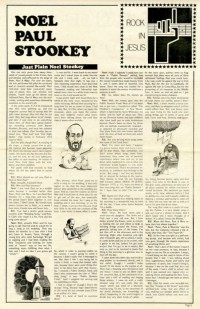

CMnexus
:
Contemporary Christian culture, music, and media.
Magazines
Profiles
Dove Awards
cmnexus.org
CM
nexus
→
Magazine list
→
Rock In Jesus
→
Issues
Rock In Jesus
Mar 1973, #7
< -- Prev
Issue list
Next -- >
Cover

Writers in this Issue
Billie Huie
Noel Paul Stookey
Cover Feature:
"Just Plain Stookey"
Noel Paul Stookey
Article:
"Andraé Crouch: Man With Confidence (Part 2)"
Andraé Crouch
What's It All About?:
"This Is Don McLean" by Billie Huie
Don McLean
Rock In Jesus:
"Part 7"
Tim Rice
,
Turley Richards
,
Lazarus
Album Review:
Billy Preston
-
Music Is My Life
The 8th Day
-
I Gotta Get Home
Bobby Vee
-
Nothin' Like A Sunny Day
Rance Allen Group
-
Truth Is Where It's At
Curtis Mayfield
-
His Early Years
Larry Norman
-
Only Visiting This Planet
Randy Edelman
-
The Laughter and the Tears
various artists -
Virgin: A Rock Opera
Derek and the Dominos
-
In Concert
The New Seekers
-
Come Softly To Me
Alexis Korner
-
Accidently Born
Published With...:
Right On!
, Mar 1973 v. 4, i. 8
Relevant Links
Issue Repository from Graduate Theological Union, Hosted at Callimachus; Issues 6-8
< -- Prev
Issue list
Next -- >
CMnexus
(noun)
The magazine index
of modern music
and Christianity
© 2011 CMnexus. Last updated August 2025.
Contact:
Rants and other correspondence to:
editor -AT- cmnexus
-DØT- org
About